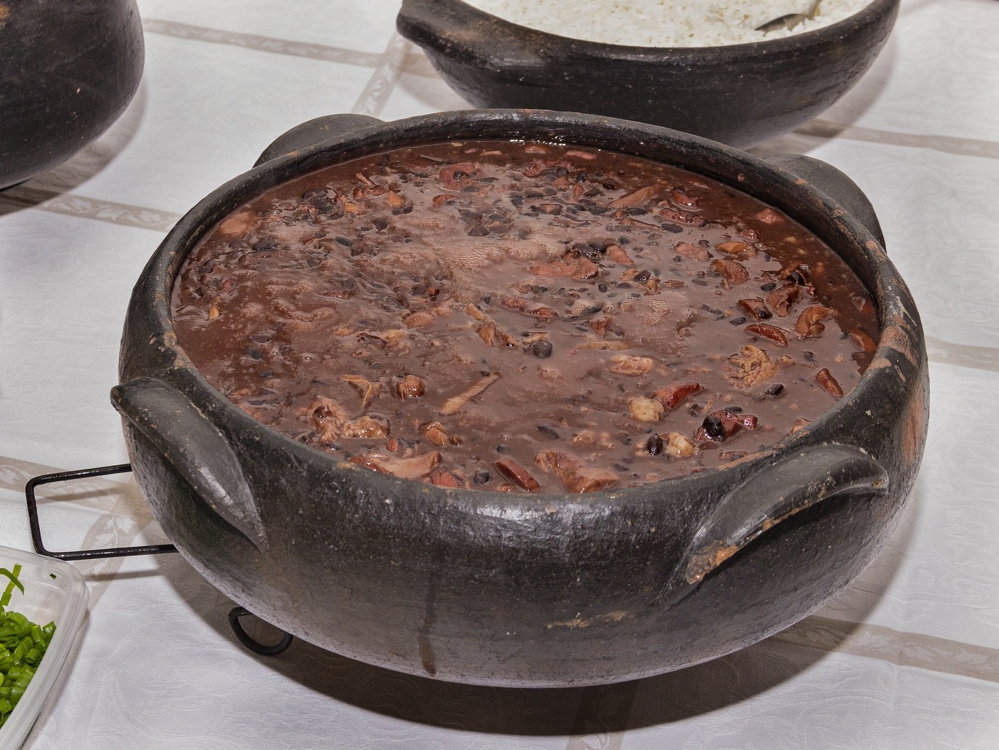

Feijoada
A feijoada é um prato típico da região Sudeste do Brasil. Ela normalmente contém feijões pretos e uma grande variedade de carnes, e pode ser consumida com arroz, farofa e outros acompanhamentos.
Ingredientes
- 1,1 kg de costela de porco salgada (1 peça com 12 ripas)
- 800 g de carne-seca
- 600 g de lombo de porco salgado
- 1 kg de feijão-preto
- 500 g de paio (4 unidades)
- 3 cebolas
- 5 dentes de alho
- ¼ de xícara (chá) de azeite
- 3 folhas de louro
- 1 colher (chá) de cominho em pó
Modo de Preparo
Para dessalgar as carnes
Comece o preparo da feijoada no dia anterior para dessalgar as carnes. Descarte o excesso de gordura das peças. Corte o lombo e a carne-seca em cubos médios de cerca de 3 cm. Apoie a peça de costelinha na tábua e corte a carne entre os ossinhos para separar as ripas. Coloque cada tipo de carne numa tigela grande, cubra com bastante água e leve à geladeira. Deixe de molho por 24 horas para dessalgar, trocando a água a cada 3 horas, de preferência.
Para a feijoada
Coloque o feijão numa peneira e lave bem sob água corrente. Transfira os grãos para uma tigela grande e cubra com 2,5 litros de água – se algum boiar, descarte. Cubra com um prato e deixe de molho por 30 minutos – se o feijão ficar muito tempo de molho pode perder a cor e desmanchar durante o longo cozimento da feijoada. Enquanto isso, faça o pré-cozimento das carnes. Escorra a água das carnes dessalgadas e transfira para um caldeirão grande (ou panela) com capacidade para 11 litros. Cubra as carnes com água e leve ao fogo alto – cerca de 4 litros bastam, a quantidade pode variar de acordo com o tamanho da panela, o importante é que as carnes devem ficar completamente imersas. Deixe cozinhar por 10 minutos em fogo alto, contados após a fervura – o pré-cozimento elimina o excesso de gordura e sal das carnes. Enquanto isso, descasque e pique fino as cebolas e os dentes de alho. Com uma faca pequena, retire a pele dos paios. Escorra a água do feijão. Passados os 10 minutos, com uma escumadeira, transfira as carnes pré-cozidas para uma tigela grande e descarte a água do cozimento, com cuidado para não se queimar. Volte o caldeirão ao fogo alto. Quando aquecer, regue com o azeite, adicione a cebola e tempere com uma pitada de sal. Refogue por cerca de 8 minutos até começar a dourar. Junte o alho, o cominho, as folhas de louro e mexa por 1 minuto para perfumar. Acrescente o feijão demolhado ao refogado e misture bem. Adicione 6 litros de água e mantenha a panela em fogo alto. Assim que começar a ferver, junte a carne-seca e a costelinha pré-cozidas, abaixe o fogo e deixe cozinhar por 2 horas, mexendo de vez em quando. Após as primeiras 2 horas de cozimento, junte o lombo pré-cozido e os paios inteiros. Deixe cozinhar em fogo baixo por mais 3 horas, mexendo de vez em quando delicadamente para não desmanchar os grãos de feijão. Faltando 30 minutos para o fim do cozimento, com uma pinça, transfira os paios para a tábua e corte cada um em fatias de 1 cm, na diagonal. Volte as fatias para a panela e deixe cozinhar até completar as 5 horas de cozimento total, ou até que as carnes estejam bem macias e o caldo da feijoada comece a engrossar. Sirva com arroz, couve refogada, gomos de laranja e farinha de mandioca torrada.
Receita retirada do site Panelinha